| Engineers • Surveyors • Land Planning Consultants • Landscape Architects • GIS Specialists |
| [ home ] [ our services ] [ our people ] [ contact us ] |
Featured Projects |
GlenRiddle – Berlin, Maryland 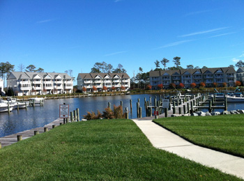 The GlenRiddle community was developed on the site of a famous ±1,000-acre horse farm consisting of tidal and non-tidal wetlands, agricultural fields, woodlands and several historic farm structures. Today the site has been transformed into one of Worcester County, Maryland's most highly acclaimed planned unit developments, comprised of 650 luxury single-family, multifamily and townhouse home sites, two 18-hole golf courses, 97-slip marina, 14,000 sf recreation & pool facility, community clubhouse, tennis courts, nature trails and commercial restaurant space. The entire site is situated in an environmentally sensitive area, which required the creation of significant wetlands mitigation areas and forest preserves. Vista successfully addressed numerous stormwater management design challenges that were attributable to large volumes of runoff originating from hundreds of acres of adjacent lands, in addition to flat terrain, high groundwater table, tidally-influenced outfall conditions, and significant flooding potential during severe storm events. The US Army Corps of Engineers established high standards for stormwater quality, thus nutrient-managing green technologies were utilized in lieu of typical sub-surface drainage structures. Twenty-one watersheds were evaluated, each with a single or multi-stage stormwater management facility and clay-lined slurry walls to arrest hydraulic movement into storm ponds to preserve wetlands. Grades were carefully evaluated, then established to preserve the natural character of the terrain. Additionally, Vista engineered more than 8 miles of subdivision streets and water distribution lines, 16,000 LF of sanitary sewer force main, and 4 sewerage pumping stations. NPDES Program: Stormwater Management Retrofit Design - Charles County, Maryland 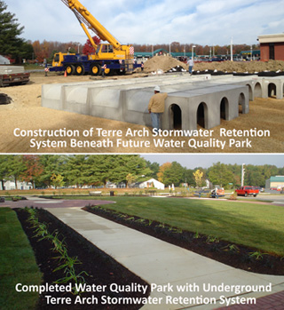 Vista Design is currently performing under its 5th consecutive contract with the Charles County, MD Dept. of Planning & Growth Management to engineer and design stormwater quality retrofits to treat existing untreated impervious surfaces in multiple neighborhoods that were developed prior to the enactment of stormwater quality regulations. These projects are part of the County's ongoing efforts to satisfy the requirements of the EPA's National Pollutant Discharge System (NPDES) Program and the Maryland Dept. of the Environment's Municipal Separate Stormwater System (MS4) Permit. The program objectives are accomplished by retrofitting existing untreated impervious surfaces within the County's development district through the application of modern techniques that improve stormwater quality, such as step pool conveyance systems, stream restoration, water quality dry swales, dry wells, wet pond retrofits, open space bio-retention systems, subsurface water quality and extended detention systems, outfall protection, and landscaping. The design process carefully considers the initial cost of construction, long-term maintenance costs, aesthetics, and the environmental features of surrounding areas. The design-phase of the work includes engineering and preparation of construction documents for all drainage, stormwater management, and erosion & sediment control systems, landscape design, wetland delineation & permitting, forest conservation plans, clearing plans, and procurement of permits and approvals. Related surveying tasks include: existing conditions & topographic surveys; ground control for aerial photography/photogrammetry; preparation of easement plats; R-O-W mosaics; metes & bounds R-O-W plats and deed descriptions; and rights-of-way stakeouts. Vista Design is also providing construction bidding-phase support to the County. The Westin Hotel and Sheraton Hotel, Baltimore-Washington International Airport 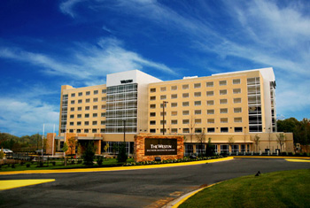 The BWI Westin and BWI Sheraton Hotels, located just minutes from Baltimore-Washington International Airport, are sited adjacent to one another on hilly parcels totaling 15.5-acres. Vista Design, Inc. provided all land planning, civil engineering, surveying, and landscape architecture services for this large-scale project, which included the design and permitting of stormwater management facilities, water distribution, sanitary sewer, grading plans, E&S control, parking lot design, and Chesapeake Bay Critical Area calculations. The hotels posed many design challenges, largely attributable to the site's steep grades and the presence of an existing State Highway Administration stormwater management facility. The construction on steep slopes necessitated the design of a multi-phased sediment & erosion control plan, as well as innovative stormwater management facilities that included sub-surface facilities, stormwater pretreatment for nutrient reduction, and infiltration basins. The existing SHA facility required redesign and upgrades to conform to current nutrient reduction requirements and other prevailing standards. More than 236,000 sf of surface parking areas containing 475 stalls conform to ADA specifications, maintain grades of 5% or less, and comply with impervious area requirements, while promoting safe and efficient vehicular and pedestrian circulation throughout the two interconnected parking areas, looped drop-off areas and shared highway entrances. Vista Design was also responsible for landscape / hardscape design, which included creation of an outdoor wedding reception area, outdoor café, and pedestrian circulation for sidewalks. Landscape planting plans strictly complied with Maryland's forest conservation regulations as well as with the County's regulations addressing stormwater quality, stormwater velocity reduction, and noise abatement. Atlantic General Hospital – Berlin, Maryland 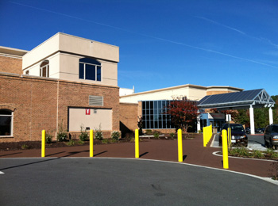 Atlantic General Hospital is a 108,000 sf, 62-bed community hospital located in Worcester County, Maryland. Vista Design, Inc. was engaged to engineer and design renovations and retrofits to the existing Emergency Department East Entrance and to design a new entrance to serve an expanded Infusion Center. The Emergency Department East Entrance renovations entailed remediation of ADA accessibility issues associated with existing sidewalk and drive aisle slopes to better comply with ADA specifications. These accessibility issues required demolition and replacement of portions of existing curbs, sidewalks and parking areas, re-grading, handicapped ramp modifications, reconfiguration of parking areas, systems to protect pedestrians from vehicular traffic, traffic signage design, and landscape planting plans. The Infusion Center element of the project entailed site design for the addition of looped drop-off facilities, reorganization of adjacent surface parking lots and drive aisles, and design of a new parking lot entrance from a secondary thoroughfare. These improvements have resulted in better separation and identification of the Infusion Center and Emergency Department entrances, augmented traffic and pedestrian circulation, and better connectivity between drop-off and parking areas. Services provided included development of conceptual, preliminary and record site plans; civil engineering; surveying to include boundary and topographic surveys; landscape planting plans; permit and approval processing; construction phase assistance; and construction observation & inspection services. Ridings of Rehoboth – Rehoboth, Delaware 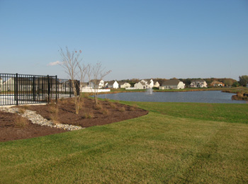 Ridings of Rehoboth is a 225-lot residential community developed in an environmentally sensitive area. Property features include multiple green spaces, stream conservation areas and forest preserve areas, in addition to an amenities package consisting of entrance features, outdoor pool, clubhouse, tot lots, horseshoe pit, and bocce court. Vista Design provided all land planning, civil engineering, amenities design and surveying services related to the project. Engineering tasks encompassed the design of subdivision roads, water distribution / fire protection, sanitary sewer, sewerage pumping station, stormwater management, erosion & sediment control, and state highway entrances and road improvements. Vista also coordinated a traffic study of the intersections surrounding the community. The stormwater management system consists of five multi-staged stormwater ponds with interconnecting pipes and outfall structures. Vista Design prepared all construction documents and successfully procured the necessary approvals and permits. Vista Design's surveying department performed a boundary survey of the entire 220-acre site; as-built surveys of water, sewer, storm drain and stormwater management ponds; wetlands location surveys; and house location surveys. Surveying tasks also included obtaining horizontal coordinates and elevations on photogrammetric points; construction stakeout of roads, stormwater management ponds, utilities and structures; and preparation of record plats. Vista Design continues to provide stakeout services for home construction. Cross County Connector Trail – Queen Anne's County, Maryland 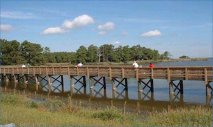 The government of Queen Anne's County, Maryland engaged Vista Design, Inc. to design and engineer the Cross County Connector Trail (CCCT), a 6,263 linear foot pedestrian-bicycle trail. The trail, funded in part by the Federal Highway Administration's Transportation Alternatives Program (TAP), will connect users with dining, retail and recreational amenities and will eventually adjoin the Maryland portion of the 6,800-mile American Discovery Trail. 3,457 LF of the trail will consist of elevated boardwalks and the remaining 2,806 LF will be paved with macadam. Two timber bridges with observation decks will span across tidal creeks, each with H-10 load ratings to support vehicles of up to 5 tons GVW. The design process posed many challenges, including mitigation of impacts to wetlands and the existence of traffic conflicts with heavily traveled US Rt. 50. Wetland impacts were resolved in part by the use of elevated boardwalks with 5-ft. vertical clearances. Traffic conflicts with US 50 and an existing draw bridge were remedied by the inclusion of marked pedestrian crossings and a combination of bollards, guard rails and chain link fences to provide separation between pedestrian and vehicular traffic. The stormwater management system will consist of +1,100 LF of grass-lined swales, in addition to one storm drain and drop inlet tying into a pre-existing closed pipe drainage system. The CCCT will also include almost 31,000 SF of landscaped areas, which are to be planted with low maintenance native species. Conceptual plans have been completed and construction documents are presently being developed. Vista is also responsible for procurement of permits and approvals from the Maryland State Highway Administration (SHA), Chesapeake Critical Areas Commission, U.S. Army Corp of Engineers, and the Federal Highway Administration. The CCCT was designed to AASHTO, MD SHA, ADA and Queen Anne's County standards. Hampton Inn & Suites – Ocean City, Maryland 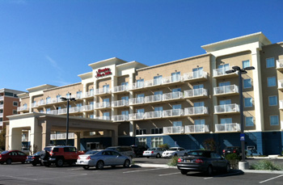 The Hampton Inn & Suites is one of the newest additions to Ocean City, Maryland's ever expanding skyline. Vista Design, Inc. served as the engineer-of-record, providing land planning, civil engineering, surveying, landscape architecture and permit processing services. The improvements consist of a single 5-story, 160,000 square foot, 104-guest room, full-service hotel with 114 surface parking stalls. The building is sited on a 2.97-acre parcel abutting regulated wetlands on the shores of an inland coastal bay. Vista Design, Inc. prepared and obtained approvals for the site plan and construction documents for stormwater management, water distribution, sanitary sewer, grading & drainage, and erosion & sediment control. Additionally, wetland mitigation plans were developed reestablishing the 1984 wetland line and a sequence of construction was crafted that minimized environmental impact to the adjacent wetlands. Vista Design's Landscape Architecture department also developed a Critical Areas landscape plan. Stormwater management facilities consist of multiple bio-retention rain gardens with pervious pavers and underground storage. All stormwater-related work strictly complies with the Maryland 2010 Stormwater Design Manual and the Maryland Critical Areas Act. Surveying tasks included an existing conditions survey, ALTA / ACSM Land Title survey, construction stakeout, and stakeout of the mitigated wetlands. Vista Design, Inc. successfully processed and obtained approvals from the Town of Ocean City, Maryland Critical Areas Commission, Maryland Department of the Environment and the Worcester County Soil Conservation District. Dunkin' Donuts – West Ocean City, Maryland and Salisbury, Maryland 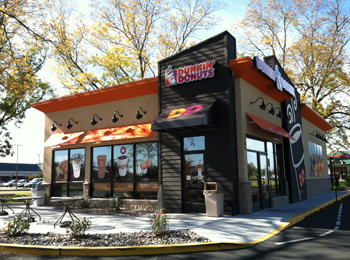 Vista Design, Inc. provided land planning, civil engineering and surveying services associated with the design and construction of two Dunkin' Donuts facilities located in West Ocean City, Maryland and Salisbury, Maryland. Vista Design developed the site plans and construction documents, including plans for stormwater management, E&S control, highway entrances, grading & drainage, and landscaping The West Ocean City Dunkin' Donuts is comprised of a single 9,900 sf building sited on a 0.8-acre lot with 25 parking spaces. The building is subdivided into 3-units consisting of a 7,362 sf Dunkin' Donuts regional bakery and two 1,200 sf for-lease retail spaces. The site suffered from drainage issues associated with a high groundwater table and multiple offsite sources of stormwater flow, which were successfully addressed by widening an existing swale to increase storage capacity and by diverting stormwater to a parking lot surfaced with pervious pavers and under-drains. The Salisbury Dunkin' Donuts occupies a ¾ acre outparcel of a grocery-anchored neighborhood retail center, which is improved with a stand-alone 2,106 sf retail facility and 18 dedicated parking spaces. The stormwater management facilities consist of a landscape infiltration system with a riser structure for emergency outfall. Survey tasks for both Dunkin' Donuts facilities included boundary and topographic surveys, construction stakeout and as-built surveys of the sanitary sewer and stormwater management facilities. U.S. Department of Agriculture – Natural Resources Conservation Service 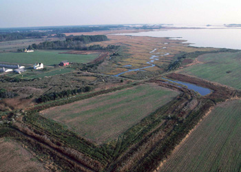 Vista Design, Inc. is currently performing under its second consecutive contract with the U.S. Department of Agriculture (USDA) – Natural Resources Conservation Service (NRCS) to provide surveying services statewide on an indefinite quantity / indefinite delivery (IDIQ) basis. The scope of services encompasses boundary and rights-of-way surveys of rural properties to establish easements under the Wetland Reserve Program (WRP). Each survey identifies the control points and lists the project coordinates in Maryland State Plane coordinates (NAD83 feet) or UTM 17 or 18 (NAD 83 meters). Additionally, each survey includes the route of ingress/egress to a publicly dedicated right-of-way, metes & bounds descriptions of the WRP Easement Area and access route, establishment of vertical control points within the easement based on the National Geodetic Vertical Datum (NGVD), delineation of croplands and woodlands, placement of permanent control markers and witness posts at easement corners, topographical surveys of the entire easement area with 2-foot contour intervals, and preparation of GIS shape files. To date, Vista has successfully completed 11 WRP Easement R-O-W Surveys in 8 Maryland counties. Wal-Mart Super Centers – Berlin, Maryland & Dover, Delaware 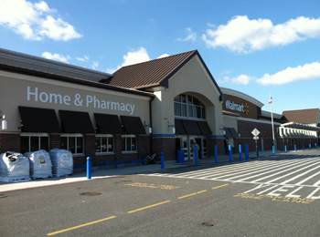 Vista Design provided construction-phase surveying and stakeout services for two Wal-Mart Super Centers, which were constructed simultaneously by separate general contractors. The Berlin, Maryland Wal-Mart Super Center consists of a ±95-acre site improved with a ±193,000 sf building and 877 parking spaces. Site-related surveys included stakeouts for rough grading, erosion & sediment control, stormwater management ponds & structures, storm drainage, water lines, sanitary sewer, curbs/gutters/sidewalks, offsite service road and multiple state highway entrances. As-built surveys were also undertaken of the stormwater management pond, wetland mitigation area, water distribution, sanitary sewer, landscaping, and storm drainage systems, in addition to completion of topographical surveys of certain offsite drainage facilities. Building-related surveys included stakeouts of the building corners, brickpoints and column-lines. The Dover, Delaware Wal-Mart Super Center consists of a ±194,000 sf building occupying a 22-acre site with 564 parking spaces. Site-related surveying tasks included stakeouts for rough grading, erosion & sediment control, curb & gutter, sanitary sewer, storm drainage, and gas lines. Building-related survey tasks included stakeouts of building corners, brickpoints, and column-lines. Countywide GIS Impervious Surface Analyses – Charles County, Maryland 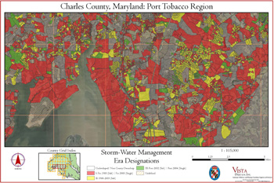 Vista Design, Inc. is presently under contract to perform GIS analyses of the entire 461 sq. mile landmass of Charles County, Maryland to identify and map all untreated impervious surfaces. The project's objective is to enable development of NPDES-compliant plans to treat 20% of untreated impervious areas as required by the County's MS4 permit. To approach the project, each developed parcel in the County is evaluated by analyzing existing GIS geodatabase and shape files, which are then cross-referenced to archived engineering plans and recorded plats. Thereafter, parcels are classified and mapped according to the time period in which they were originally developed (the "development era"). The development era is a good indicator of the water quality controls that are likely to exist. Candidate sites are then identified to receive new or retrofitted stormwater facilities, based on the efficacy of any existing facilities, the size of the drainage basin that would be served, the amount of impervious area that would be captured and treated, and the potential for impacts to surrounding landowners. The evaluation process for each candidate retrofit area includes completion of existing conditions surveys; wetland and forest stand delineations; soils investigations; preparation of conceptual designs and cost estimates; and meetings with local and state government officials for review of the conceptual designs. Those facilities anticipated to yield a favorable cost per treated impervious acre ratio are then advanced to higher levels of engineering analysis, design and permitting. Carillon Square – Millsboro, Delaware 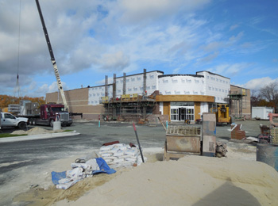 Vista Design, Inc. is providing planning, engineering, surveying and landscape architecture services for Carillon Square, a mixed-use project being developed in three phases. The 37.73-acre site is being improved with a 14,673 SF Rite Aid Pharmacy; a 4,670 SF Wawa Convenience Store—including twelve fueling bays; a 3,600 SF bank; a 31,800 SF strip retail center with 9 in-line tenant spaces; ±70 townhouses; and ±30 detached single-family homes. Vista Design successfully processed the Preliminary Land Use Services (PLUS) review, coordinated a traffic impact study, obtained partial rezoning as was necessary, and acquired site plan approvals. Additionally, certain improvements to two adjacent state highways were also designed by Vista, including right and left turn lanes and channelized exits. All civil engineering for Phases I and II is complete and construction documents have been successfully processed for approval through the appropriate regulatory agencies. Site and building construction are now in progress. Conceptual plans for the Phase III sanitary sewer and pumping station are currently being developed in order to facilitate expansion of the Sussex County Sewer District and partial rezoning as necessary to move forward with the residential portion of the project. Various surveying tasks have been completed as part of the design-phase work, including boundary, topographical and existing conditions surveys, preparation of rights-of-way and re-subdivision plats, and preparation of as-built drawings. Construction-phase services include construction stakeout and construction requisition administration. |
Vista Design, Inc. • Main Office: 9954 N Main St Unit 1 • Berlin, MD 21811 • Phone: 410.352.3874
Web design provided by Vantage Point Solutions Group